CrewCrow
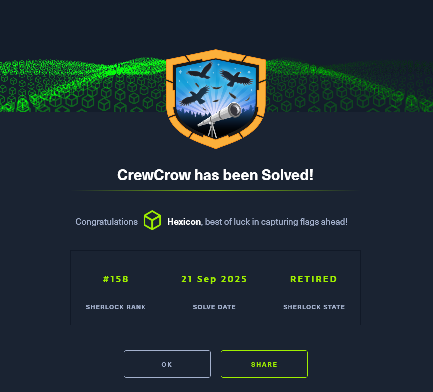
The Cyber Crime Investigation Unit (CCIU) has been tracking a famous cybercriminal organization known as "CrewCrow" for several years. The group is responsible for numerous high-profile cyber-attacks, targeting financial institutions, government agencies, and private corporations worldwide.
The elusive leader of CrewCrow, known by the alias "Nefarious," is a master hacker, who has managed to evade the authorities for years. In a major breakthrough, CCIU intercepted communications indicating that Nefarious was planning a significant cyber-attack.
Acting swiftly, the unit launched a coordinated operation, to arrest CrewCrow members and seize their equipment. During the raid, agents confiscated several devices, including Nefarious's personal computer.
As the top digital forensics analyst in the country, you have been tasked with analyzing the disk image of Nefarious's computer. Your objective is to uncover critical information that could provide insights into CrewCrow's operations, reveal the details of their planned attack, and ultimately bring Nefarious to justice.
Task 1
While extracting the challenge archive, I noticed a Zoom directory being extracted to C\Users\Nefarious\AppData\Roaming\Zoom. Zoom is a communicator app that allows for video meetings and messaging.
On Nefarious's desktop, I also found a file containing CrewCrow's terms and conditions. Inside, there was a point about communication tools that contained Zoom.
3. Communication Tools
Zoom: Use of Zoom for all meetings is mandatory due to its secure, end-to-end encryption.
Encrypted Email: Use only encrypted methods for email.
Secure Messaging Apps: Use approved encrypted messaging apps.
Zoom will be my answer to question 1.
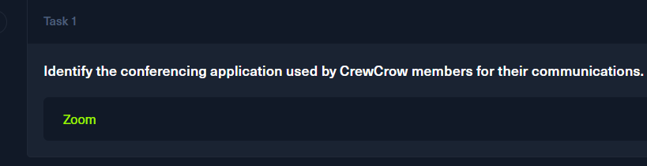
Task 2
The provided filesystem clone contains prefetch files of executables. This will allow me to check for files/directories referenced, as well as for the last time the executable was used.
I'll use PECmd.exe from Eric Zimmerman to parse these prefect files of Zoom.exe, which is located under C\Windows\prefetch
PECmd.exe -f "C:\Users\malware\Desktop\challs\CrewCrow\C\Windows\prefetch\ZOOM.EXE-F882A381.pf"
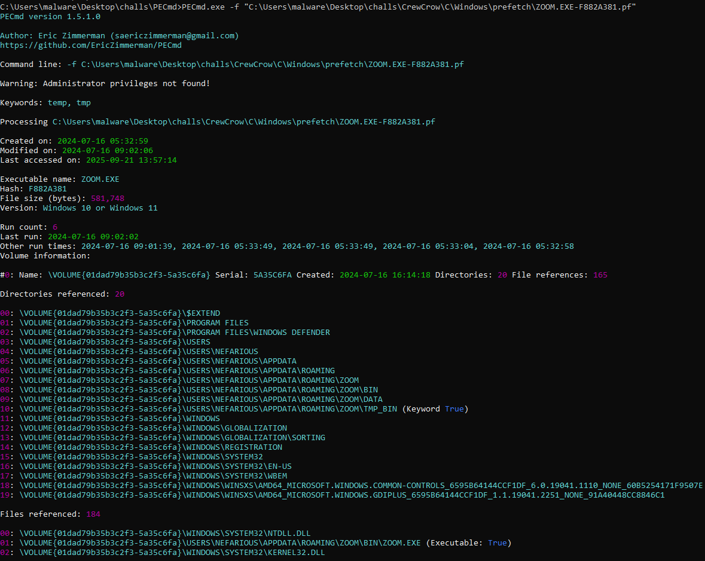
The file was executed 6 times, and the last time it was used was at 2024-07-16 09:02:02
This timestamp will be my answer to question 2.
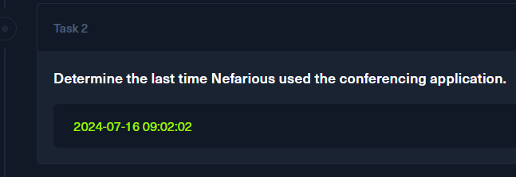
Task 3
Zoom's data is stored under C\Users\Nefarious\AppData\Roaming\Zoom\data
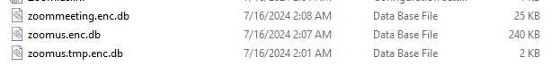
The 3 visible databases are encrypted. This will be important later, but for now, the path will be my answer to question 3.

Task 4
One of the Windows data protection methods I've encountered before is DPAPI(Data Protection API). Presence of DPAPI-credentials can be confirmed by looking into the C\Users\Nefarious\AppData\Roaming|Local\Microsoft directories, and looking for a Protect/Credentials directory.
A masterkey exists within Nefarious' Protect directory. I'll also see whether there is a credential blob in the AppData/Local/Microsoft/Credentials directory.
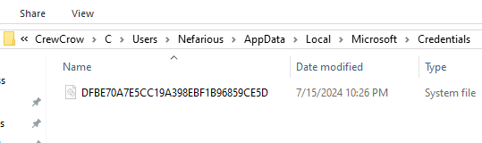
There is a credential blob as well, but I won't be able to do anything with it just yet. To decrypt the masterkey, I need the user's SID and their password. While the SID can be seen in the Protect directory, Nefarious's password remains a mystery.
For now, I'll answer question 4 with DPAPI.
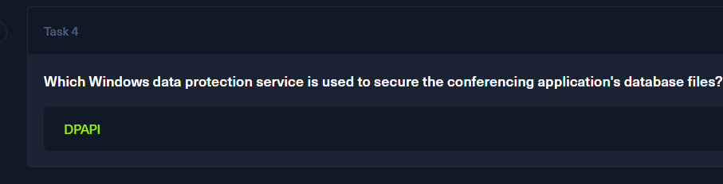
Task 5
I began this task by looking into the SOFTWARE registry hive, checking the Microsoft\Windows\CurrentVersion\Authentication\Credential Providers in particular. This key lists all authentication methods configured on the system.
RECmd.exe -f "C:\Users\malware\Desktop\challs\CrewCrow\C\Windows\System32\config\SOFTWARE" --kn "Microsoft\Windows\CurrentVersion\Authentication\Credential Providers"
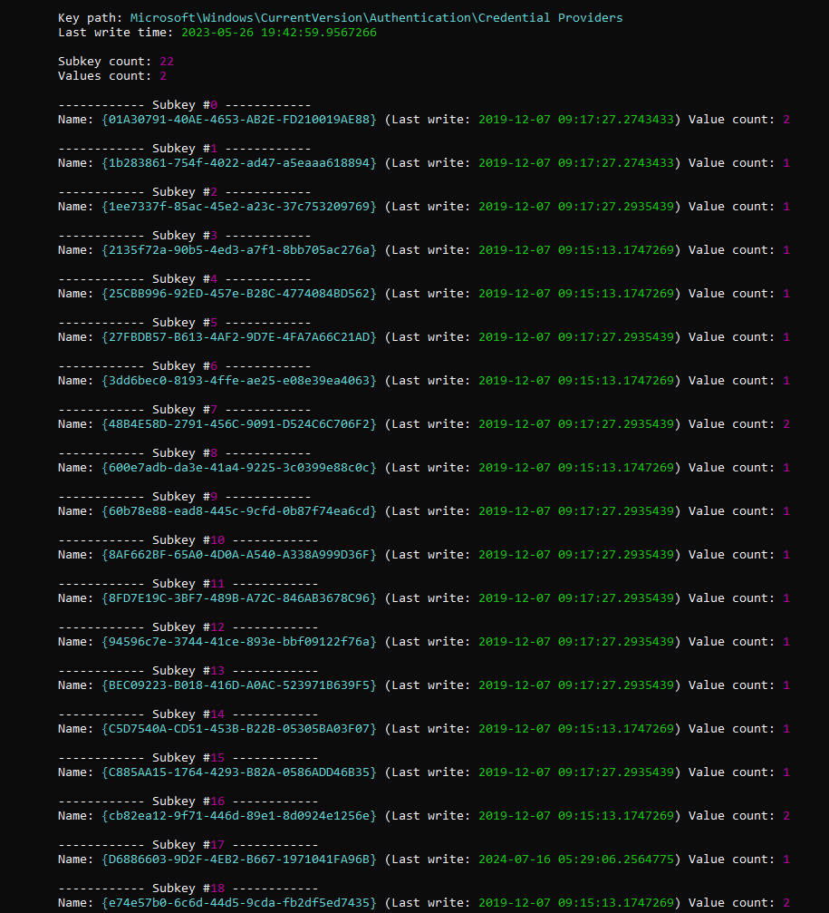
This list of GUIDs will be important in a bit. Each subkey corresponds to an authentication method. For example, the first GUID corresponds to the Automatic Redeployment Credential Provider
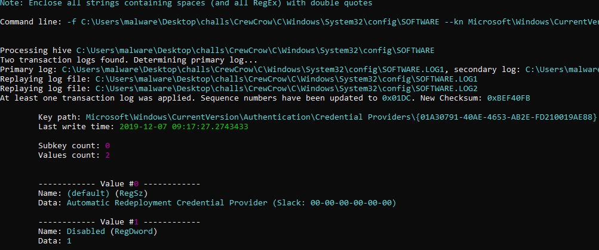
The next key I'll check will be Microsoft\Windows\CurrentVersion\Authentication\LogonUI. This key contains information about the computer's logon user interface, and information about the latest successful login attempt. The used method, and the user who had logged in(their username, SID).
RECmd.exe -f "C:\Users\malware\Desktop\challs\CrewCrow\C\Windows\System32\config\SOFTWARE" --kn "Microsoft\Windows\CurrentVersion\Authentication\LogonUI"
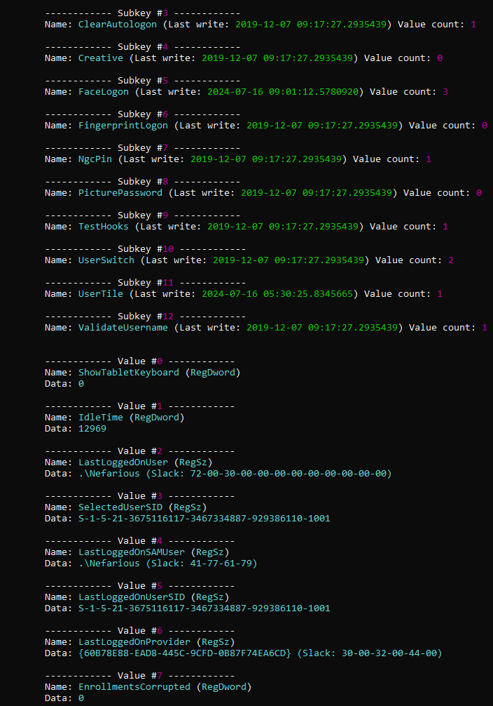
The value of LastLoggedOnProvider is {60B78E88-EAD8-445C-9CFD-0B87F74EA6CD}. I'll check this GUID against the earlier GUID list to see what provider was used during that logon attempt.
RECmd.exe -f "C:\Users\malware\Desktop\challs\CrewCrow\C\Windows\System32\config\SOFTWARE" --kn "Microsoft\Windows\CurrentVersion\Authentication\Credential Providers{60B78E88-EAD8-445C-9CFD-0B87F74EA6CD}"
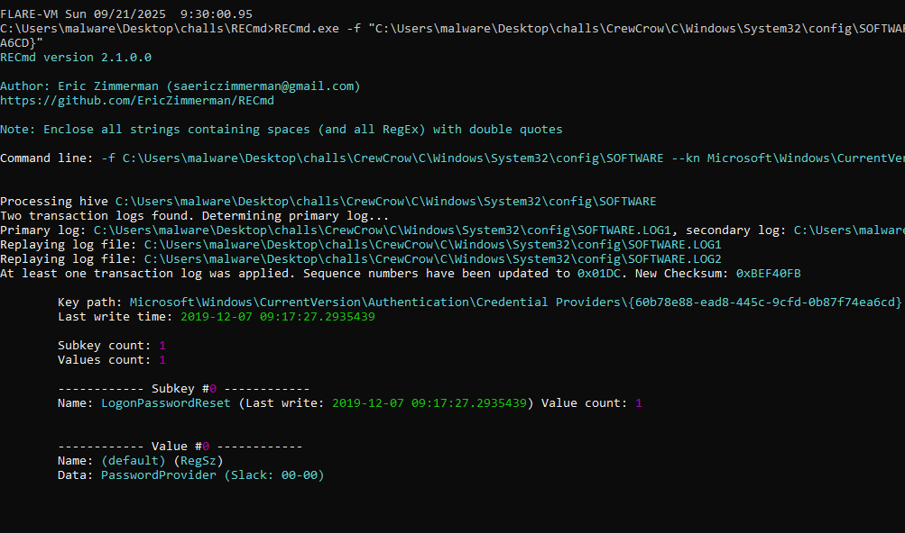
The value of PasswordProvider means that Nefarious had used password authentication as their last logon method.
I'll use password as my answer to question 5.
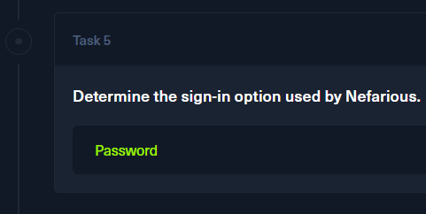
Task 6
For task 6, I will move to my kali virtual machine. I'm not sure why, but secretsdump.py on Windows kept throwing an invalid argument error related to the SAM hive. I'll come back to investigate it further later.
I'll use impacket-secretsdump to parse the SYSTEM and SAM hives, and extract Nefarious' NTLM hash.
The reason why I need both hives is that the SYSTEM hive contains the system's bootkey, which is required in the decryption process of the SAM hive data containing the NTLM hashes.
impacket-secretsdump -system C/Windows/System32/config/SYSTEM -sam C/Windows/System32/config/SAM LOCAL
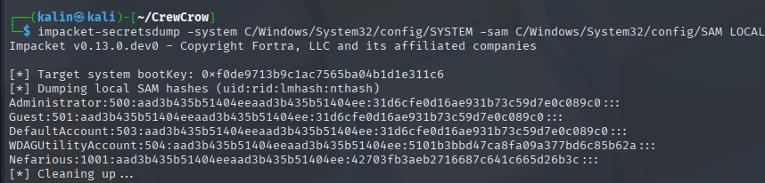
I'll copy the NT hash 42703fb3aeb2716687c641c665d26b3c into a file, and I will use hashcat to try and crack it. The mode for NTLM hashes in hashcat is 1000.
hashcat -m 1000 hash /usr/share/wordlists/rockyou.txt
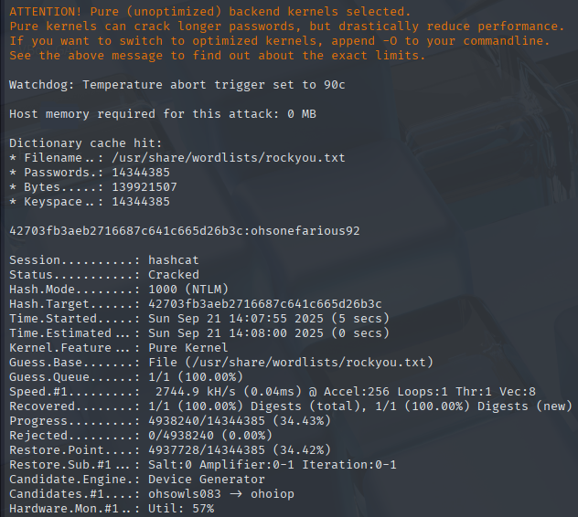
Nefarious | ohsonefarious92
I'll use the password as my answer to question 6.
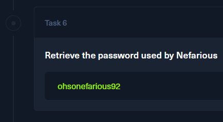
Task 7
With Nefarious'' password, I can now decrypt the masterkey and the credential blob from earlier.
impacket-dpapi masterkey -file <masterkey file> -sid <user SID> -password ohsonefarious92
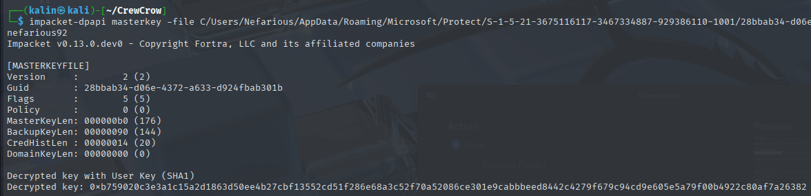
However, the credential blob did not contain anything useful besides a username, which I'll keep in mind.
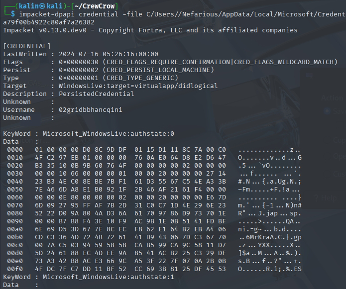
Decrypting the zoomus.enc.db database
While looking around the web for information, I stumbled upon a reddit post on r/computerforensics about Zoom's encrypted DBs.
https://www.reddit.com/r/computerforensics/comments/kch7ot/zoom_artifacts_encrypted_dbs/
In the Zoom.us.ini file, there is a win-osencrypt-key which will be used to decrypt the db.
[ZoomChat]
win_osencrypt_key=ZWOSKEYAQAAANCMnd8BFdERjHoAwE/Cl+sBAAAANKu7KG7QckOmM9kk+6swGwAAAAACAAAAAAAQZgAAAAEAACAAAADJx9AI6i9CEvRYhIK10gayvm5YyrBN9LxAjHylMKgQ0QAAAAAOgAAAAAIAACAAAAC2EfbilZ5wE8mRW0xeUP0IcyQCufOYKa7MbOFXLSdvBzAAAAB94pzf6DE7fRhpJ2tbIsw3ZtYaDKlb3ncvT16Jlwj44rMGIbIYWZtMBVbRV1U8PwNAAAAARwtW+e31mKSZeh4igd735aC1hB4J/8Ye93i0IhDeXBMFbAMWWBwLz77OuZa8spLkcKfYpGQF63fXVvJkxjmnpA==
com.zoom.client.langid=1033
I'll strip off the [ZoomChat] win_osencrypt_key=ZWOSKEY part as instructed, and I'll copy the remaining base64 string. Then I'll base64 decode it and direct the output into a different file named outfile.
After that, I'll use the masterkey I've decrypted earlier to unprotect the new file.
impacket-dpapi unprotect -file outfile -key <KEY>
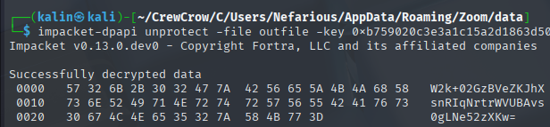
The resulting base64 string W2k+02GzBVeZKJhXsnRIqNrtrWVUBAvs0gLNe52zXKw= will be used as the decryption key.
Following the comments, I'll use SQLCipher to work with the encrypted database.
https://www.zetetic.net/sqlcipher/design/
I'll set the key value to the unprotected base64 string.
PRAGMA key='W2k+02GzBVeZKJhXsnRIqNrtrWVUBAvs0gLNe52zXKw='
Then I'll change the kdf_iter value to 4000, as shown in the comments. The default value in SQLCipher is 256,000.
PRAGMA kdf_iter = '4000'
And lastly, I'll change the cipher page size value to 1024, as the default is set to 4096.
PRAGMA cipher_page_size = 1024
With these values set, I can now browse the database.
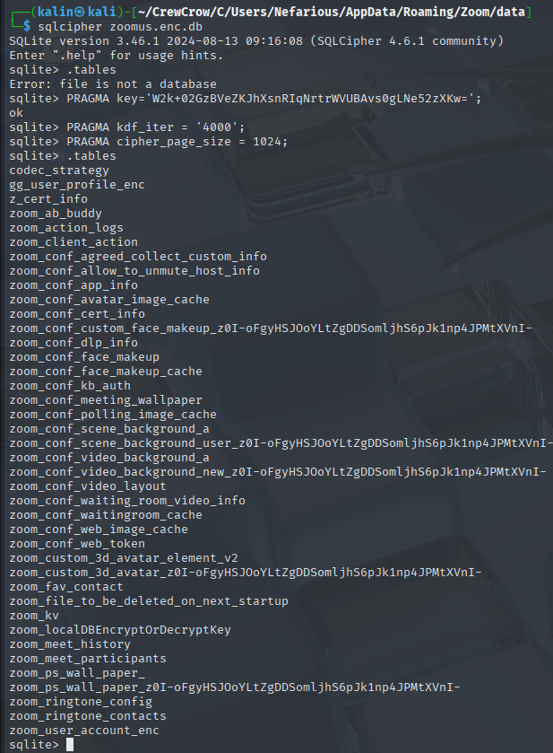
My answer to question 7 will be 4000
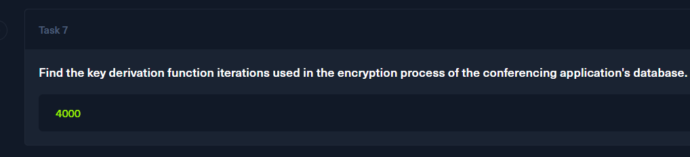
Task 8
The answer to this question was uncovered while answering question 7.
Page size = cipher page size, which is 1024.
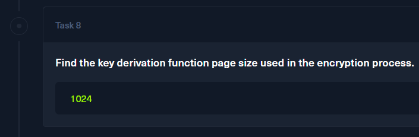
Task 9
I'll take a look at the zoom_user_account_enc table. The final "enc" bit probably means it is encrypted too, just like the DB files.
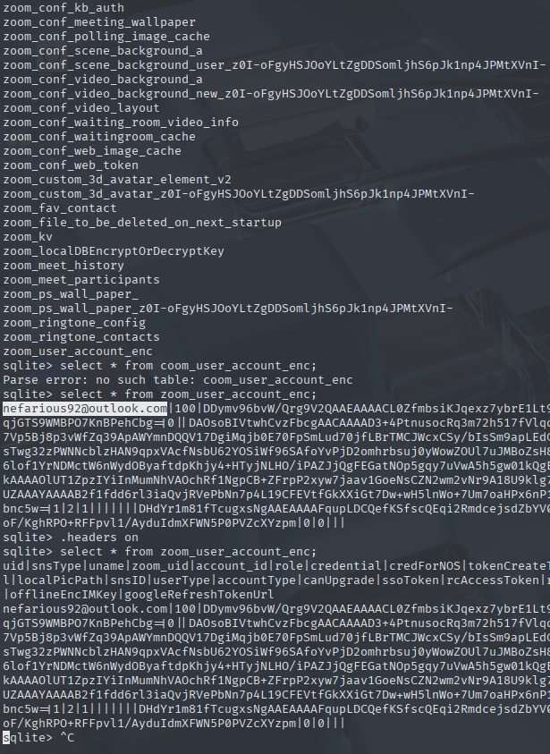
The values are indeed encrypted, aside from the email. I'll use nefarious92@outlook.com as my answer to question 9.
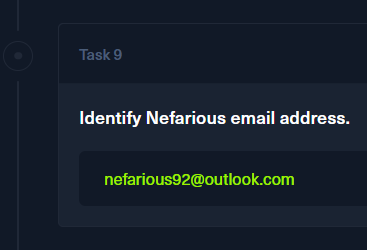
Task 10
I will look into the zoom_kv table. It should contain data in a key-value pair, judging by its name.
Since I'm looking for a meeting ID, I'll form an SQL query to list every key that contains the meeting string.
select * from zoom_kv where key like '%meeting%';
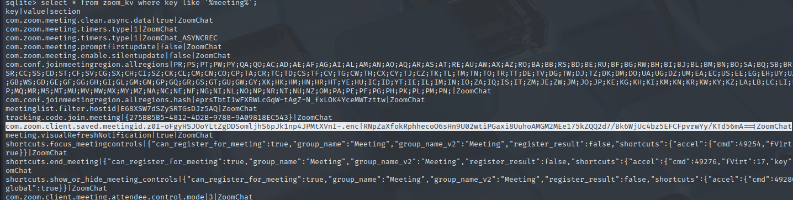
This highlighted entry looks very promising. Its value looks like a base64-encrypted string, but it does not decrypt into anything useful.
Looking around the web again, I found this exact scenario explained for a CTF challenge.
https://cellebrite.com/en/part-1-ctf-2022-write-up-marshas-pc/ (Under Question 11: IDs (100 points) – What is the Personal Meeting ID of the Zoom user account holder?).
I'll follow the steps described here for now. Since I already have Nefarious' SID, I created a small script to do the process for me(based on the script from the article).
import hashlib
sid = 'S-1-5-21-3675116117-3467334887-929386110-1001'
sha256_once = hashlib.sha256(sid.encode()).digest()
key = sha256_once
sha256_twice = hashlib.sha256(sha256_once).digest()
iv = sha256_twice[:16]
print("Key (SHA256 of SID): ", key.hex())
print("IV (SHA256 of SHA256(SID))[:16]:", iv.hex())
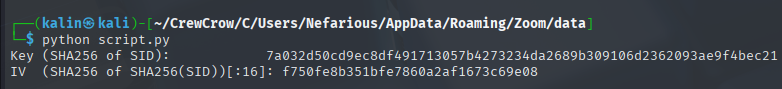
Using the key and the IV, I'll fill the missing fields in my AES-CBC decrypt operation in CyberChef.
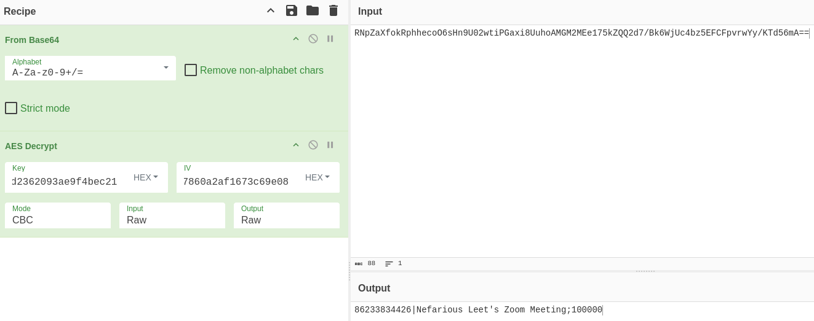
The meeting ID seems to be 86233834426. That will be my answer to question 10.
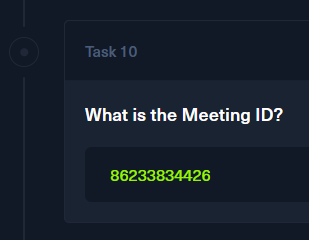
Task 11
In the data directory, there was an encrypted database named zoommeeting.enc.db. I'll repeat the same steps with SQLCipher values as in task 7.
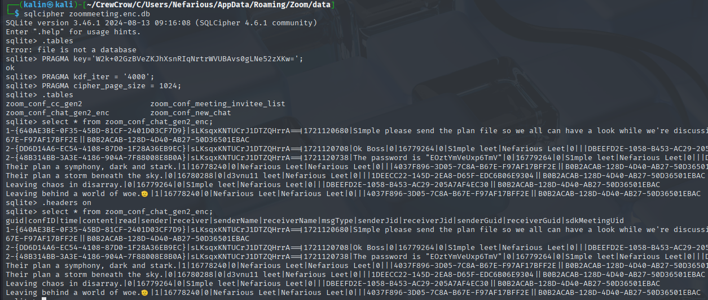
I can read the message contents without repeating the value decryption from task 10. In the third message, a user shares the password of EOztYmVeUxp6TmV.
This password will be my answer to question 11.
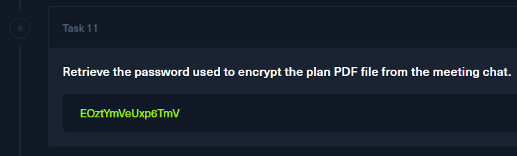
Task 12
Earlier, while initially exploring the disk image, I saw a few PDF files in the C/Users/Nefarious/Documents/Operations directory. There were 3 PDF files in the Accomplished directory, and a single, password-protected file in the Pending directory.
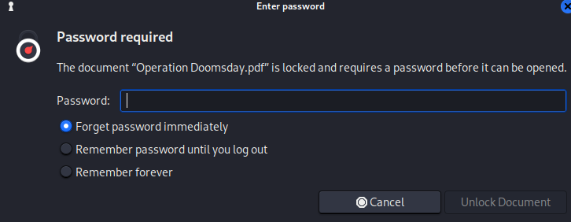
The PDF document is protected, but I have a password from the Zoom chat. I'll unlock the document with this password.
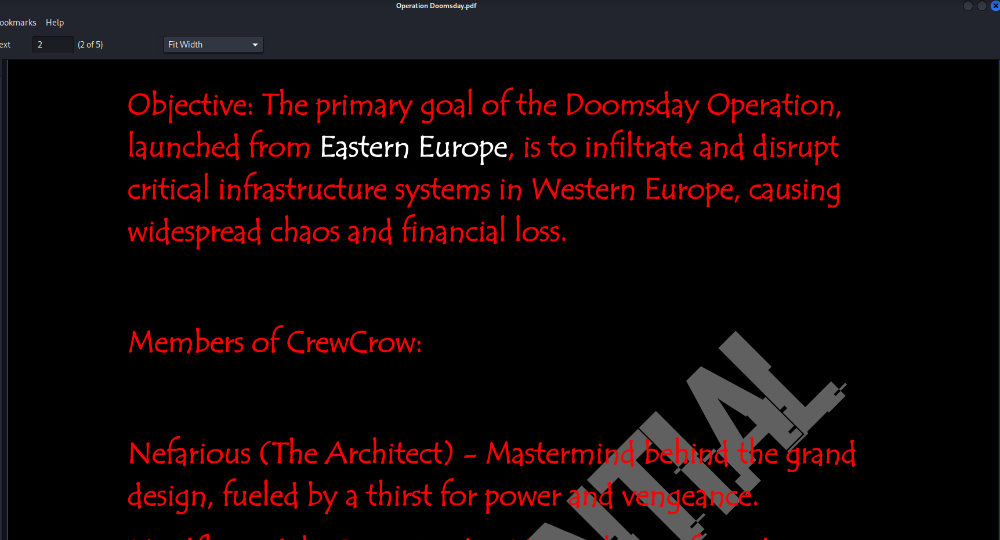
The document contains details about Operation Doomsday, which was supposed to be launched from Eastern Europe
Eastern Europe will be my answer to question 12.
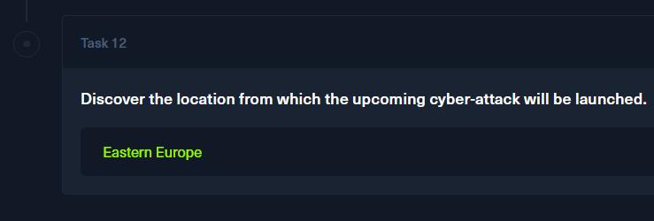
Solved!